Lecture 8 · 人工智能产业实践 · MBA / EMBA
智能产业实践
读懂 Forbes AI 50（2026）：
谁在做 · 在哪一层 · 改变了什么
IN THIS LECTURE
PART 1The AI 50榜单：50 家公司与一年的变化
PART 2Four Layers四层产业栈：数据 · 算力 · 模型 · 应用
PART 3Business & Value商业与价值：钱、人、结局
PART 4What Changes认知改变：个人 · 组织 · 系统

常象宇 Xiangyu Chang
西安交通大学 管理学院
xiangyuchang@xjtu.edu.cn
LECTURE 8 · 人工智能产业实践
这一讲，回答三个问题
用一份榜单——Forbes AI 50（2026）——读一遍这一轮人工智能产业。
Q1 · PART 1–2
谁在做？
50 家最有潜力的非上市 AI 公司
一年里谁进、谁出、谁涨了
Q2 · PART 2
在哪一层做？
数据 → 算力 → 模型 → 应用
四层产业栈里的位置与护城河
Q3 · PART 3–4
为什么重要？
钱、人与结局；个人、组织、系统
这一轮到底在改变什么
方法
原 PPT 一页介绍一家公司（共 50 页）。本讲改为按层归类 + 可点击的全景图，并用 2026 年的数据重新调研。
参考 原 PPT P1–P3、P54–P57；R1–R4 Forbes 2026 AI 50
LECTURE 8 · 课程位置
Data → AI → Business Value
八讲走到这里：方法论与工具已经就绪，现在看产业。
→
L3–L7
方法
AI 1.0 → 4.0：规则、回归、机器学习、深度学习、预训练模型与智能体
→
参考 原 PPT 课程规划（Lecture 1 P3）；AGENTS.md 课程规划
LECTURE 8 · 人工智能产业实践
01
PART 1
The AI 50
50 家最有潜力的非上市 AI 公司：谁进了名单，一年里发生了什么
1.1榜单怎么来的
1.2一年换血：30 留、20 进、20 出
1.3全景图：可点击的 50 家
1.4钱：集中度与估值变化
PART 1 · 1.1 榜单
Forbes AI 50
与 Sequoia、Meritech 合作，自 2019 年起每年发布
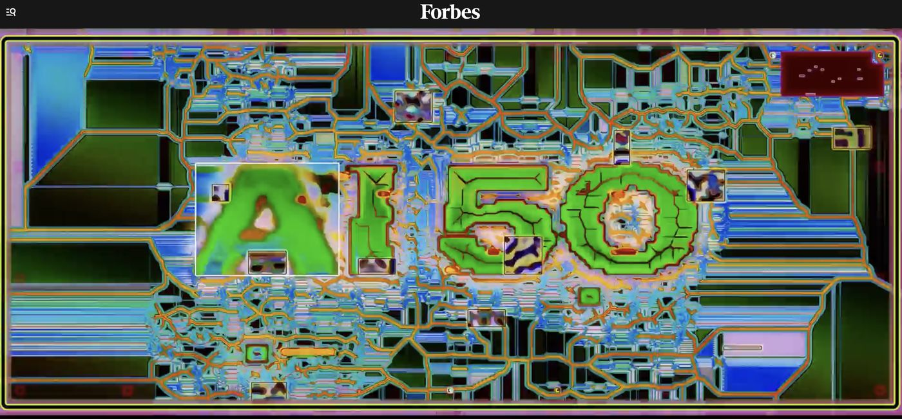
原 PPT P2 · Forbes AI 50 官方视觉
第八届 · 2026-04-16不排名 · 按字母序全球非上市公司无申请费
STEP 1
公开提名 + 定向邀请
数千家候选公司提交业务模式、技术团队、估值、收入、融资；可保密提交
STEP 2
算法初筛
Sequoia 合伙人 Konstantine Buhler 设计的模型：融资史、客户进展、员工满意度等
STEP 3
前 70 家交评委
学界/研究者（MIT 的 Aude Oliva、Stanford 的 Chris Manning、Joy Buolamwini）+ 投资人（Sarah Guo 等）；有利益关系者回避
STEP 4
Forbes 编辑定稿
50 家入选；2026 年新增 Brink List（20 家种子/A 轮公司）
参考 原 PPT P2；R2 Forbes 新闻稿、R4《How Forbes Compiled…》；⚠ “自 2019 年起”据第八届推算
PART 1 · 1.2 变化
参考 原 PPT P4–P53（2025 名单）对比 R1 Forbes 2026 名单（本课自行比对）；R3 三家被收购/人才收购的说明；⚠ Windsurf、xAI 的处理方式以 Forbes 报道为准。← → 先走完三组
PART 1 · 1.2 变化
从 AI Dominance 到 AI Independence
Forbes 的判断：成功不再只是“谁的模型最强”，而是谁掌控它、怎么用它、运行它要花多少钱。
01
摆脱对 Big AI 的依赖
开放权重、私有化部署、自有模型
04
Agent 进入职场
软件开始承担过去需要整个团队的任务
05
算力是竞争优势
谁能拿到、买得起底层算力，谁占先机
2025（原 PPT）
不再一味追逐模型规模与聊天界面，而是把模型用于实际业务场景，做出能完成完整工作流程的产品；应用爆发催生算力基础设施提供商。
→
2026
参考 原 PPT P3；R2 Forbes 新闻稿（五项 Key Trends，中文为本课意译）
PART 1 · 1.3 全景图
参考 原 PPT P4–P53（逐家介绍）；R1 Forbes 2026 名单；R6 foundevo、R7 note.com（融资/估值二手整理 ⚠；融资合计与 Forbes 的 3,056 亿美元一致）；“层”的归类为本课判断
PART 1 · 1.4 钱
50 家，合计融资 3,056 亿美元
80%
来自 OpenAI + Anthropic（2,426 亿美元）；其余 48 家合计约 630 亿
7.4亿
50 家融资额的中位数（美元）⚠ 二手计算
28
家成立于 2022 年及以后——与 ChatGPT 同龄 ⚠
两个世界
前沿模型是资本密集型：几百亿美元起步。应用层是资本轻型：Gamma 融资 9,100 万美元、Midjourney 为零，却已有数亿美元收入。
地理集中
名单面向全球，但海外只有少数几家：Mistral（巴黎）、Legora、Lovable（斯德哥尔摩）、Black Forest Labs（弗莱堡）、Cohere（多伦多）、Synthesia（伦敦）。
参考 R2、R3 Forbes（3,056 亿、OpenAI+Anthropic 2,426 亿、33 家加州）；R6、R7 二手（中位数 7.35 亿、28 家 2022 年后成立、旧金山 25 家 ⚠ 本课用二手表复算）
PART 1 · 1.4 钱
其余 36 家融资均不超过 10 亿美元，其中 Midjourney 与 Surge AI 为 0。
参考 R1 Forbes 2026；R6、R7 融资额二手整理 ⚠；颜色 = 所在层（青：数据；赭：开发算力；蓝：模型；灰：应用）
PART 1 · 1.4 钱
留任公司：估值高度分化
原 PPT（2025 榜单）的估值 → 2026 榜单前后的公开估值（单位：十亿美元）
参考 原 PPT 各公司页（2025 估值）；2026 估值见 R7 / R16 ⚠ 二手；OpenAI 原稿为历史对价，不可比，未列入
LECTURE 8 · 人工智能产业实践
02
PART 2
Four Layers
数据与知识 → 开发与算力 → 基础模型 → 应用：每一层的玩家、逻辑与护城河
2.1数据与知识层
2.2开发与算力层（含 AI 编程）
2.3基础模型层
2.4应用层：七个行业域
PART 2 · 2.0 地图
同一类图，两年前长这样
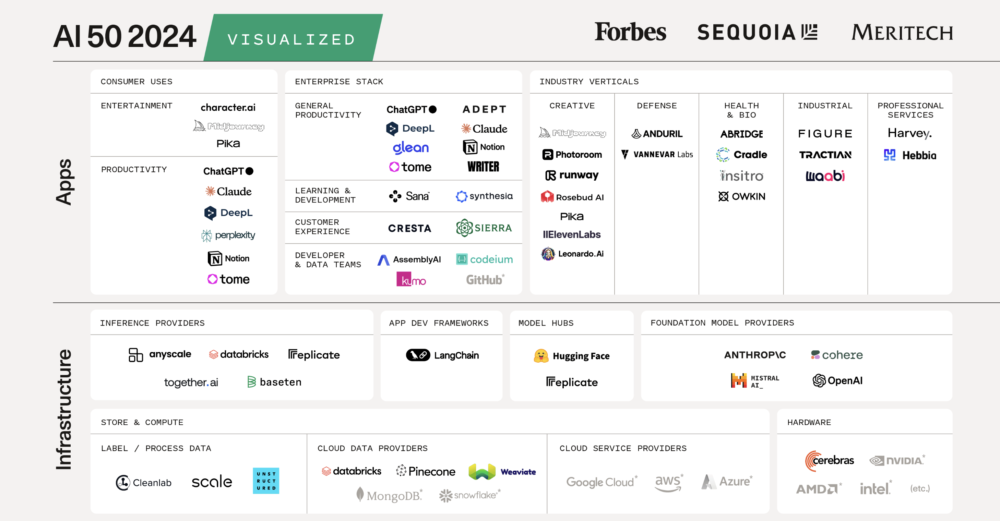
原 PPT P3 · AI 50 2024 Visualized（Forbes × Sequoia × Meritech）
2024 · 两大块
Apps ／ Infrastructure
应用：消费、企业栈、行业垂直；基础设施：推理、框架、模型库、基础模型、存储与算力、硬件。
本讲 · 四层
把基础设施再拆开
数据与知识、开发与算力、基础模型三层，加上应用层——与原 PPT P54–P57 的归类一致。
值得注意
地图每年都在重画
2024 地图上的许多名字，今天已不在榜单；而榜单上新增了编程 Agent 与机器人。
参考 原 PPT P3、P54–P57；⚠ “四层”为课程归类，不是 Forbes 官方分类
PART 2 · 2.0 总图
参考 原 PPT P54–P57（四层归类）；R1 Forbes 2026 名单；⚠ 归类与护城河为课堂判断；“·新”= 2026 新晋
PART 2 · 2.1 数据与知识层
数据与知识：模型的原料与记忆
2025 → 2026
原 PPT 数据层：Scale AI、Snorkel、Coactive、Hebbia、VAST Data（标注、合成、检索、存储）→ 本届只剩 Databricks、Glean、Mercor；新增 Surge AI、Cyera。重心从“标注工具”移向专家数据与数据安全治理 ⚠
参考 原 PPT P54（数据与知识层）、P13、P19、P21、P26、P38、P41、P49；R1 Forbes；R7、R12 Reuters（Databricks 2026-08）；⚠ Mercor 归入此层、Surge AI 估值与收入为二手/估计
PART 2 · 2.2 开发与算力层
模型要跑起来：推理与算力
Forbes 的判断之一：能不能拿到、买不买得起算力，是竞争优势。
2026 Q3
Crunchbase：Crusoe 在 Q3 单轮融资超 30 亿美元；当季数据中心、半导体、能源等“物理基础设施”行业各融资超 100 亿美元。
参考 原 PPT P55（开发与部署平台、计算能力与硬件）；R1、R2 Forbes；R7；R17 Crunchbase Q3 2026；⚠ 原 P55 中 Hugging Face、LangChain、Lambda、StackBlitz、Windsurf 本届未入选
PART 2 · 2.2 AI 编程
AI 编程：一年三次洗牌
上一届的 Windsurf：Google 以 24 亿美元聘走联创并授权技术，Cognition 收购余下部分——一家公司被“拆开”。
Cursor 的估值轨迹（十亿美元）
年化收入：2025 年榜单时约 1 亿美元 → 2026-02/03 超过 20 亿；公司内部预测年底 > 60 亿（⚠ 预测）。同时 Claude Code、Codex 等“模型公司自己的编程工具”在抢同一批开发者。
参考 R23 Forbes AI 50 2025（Anysphere 25 亿）；R11 TechCrunch（>20 亿年化收入、500 亿估值洽谈）；R10 Forbes（SpaceX 600 亿，8 月完成 ⚠ 二手）；R13 Bloomberg（Cognition 480 亿）；R3（Windsurf）
PART 2 · 2.3 基础模型层
参考 原 PPT P56（基础模型与通用平台层：OpenAI、Anthropic、Cohere、Mistral、xAI……）；R1 Forbes；R6、R7 ⚠ 融资/估值二手；“类型”为课堂归类；xAI 已并入 SpaceX
PART 2 · 2.4 应用层
参考 原 PPT P57（客服 / 法律与合规 / 创意与多媒体 / 机器人与自动化 / 企业服务 / 医疗 / 教育与语言 / 国防与公共安全）；R1 Forbes 2026；⚠ 国防域（原 Vannevar Labs）本届无入选；行业域归类为课堂判断
PART 2 · 2.4 医疗与生命科学
医疗：先替医生省下时间
ABRIDGE · 文书
医患对话 → 病历
监听问诊，自动生成病历与计费信息，写回电子病历系统。落地于 Johns Hopkins 等机构（⚠ 二手）。融资 8.3 亿，估值 53 亿。
OPENEVIDENCE · 检索
医生的循证问答
从文献与指南里检索并生成可用答案。估值较上年 4 月约增长 12 倍（⚠），到 120 亿美元。
CHAI DISCOVERY · 药物
设计蛋白与抗体
成立约两年、估值 13 亿美元的药物发现模型公司；OpenAI 是早期投资人。
Brink List · Latent Health
AI Agent 替医生填写保险文书，让患者更快拿到处方药；估值 6 亿美元。
Brink List · Certuma
目标是首个获 FDA 批准、可诊断并开处方的 AI 系统——从“替医生省时间”走向“替医生做判断”。
规律：监管越严的行业，AI 越先从文书、检索、流程切入，再逐步靠近临床判断。（课堂归纳）
参考 原 PPT P4、P31；R1、R3、R5 Forbes（Brink List）；R7 note.com ⚠ 二手；L1 中“AI 病历助手研究”可对照
PART 2 · 2.4 法律与金融
专业服务：按小时收费的行业被重估
Harvey
律所与法务的 AI 助手：研究、起草、并购尽调。约 10 万法律人士、1,300 家机构（⚠）；2026-09 估值 155 亿美元，并发布首个后训练开放权重模型与 Harvey LAB 基准。
Legora NEW
欧洲（斯德哥尔摩）。把大量合同拆成“一行一份文件、一列一个问题”的表格，找出差异；2026-03 融资 5.5 亿美元（⚠），向美国扩张。
Rogo NEW
投行与资管的分析助手：约 25,000 名银行家/投资者在用；收入由 2024 年约 200 万美元增至 2025 年 1,500 万美元以上（⚠ 二手）。
2026 年 2 月
“SaaSpocalypse”
Anthropic 发布面向企业流程自动化的 Claude Cowork，据 Forbes：SaaS、IT 与法律服务类股票市值一度蒸发约 2,850 亿美元。
信号：模型公司直接进入应用层，应用层公司必须回答“我比模型公司多什么”。
参考 原 PPT P20、P21、P25；R1 Forbes（Anthropic 条目：2,850 亿美元）；R14 Harvey 博客；R7 note.com ⚠ 二手（用户数、融资额、收入）
PART 2 · 2.4 客服与运营
客服 Agent：从“能说”到“能办”
SIERRA
接入政策与后台
连接企业规则与内部系统，直接执行查单、改期、退款。估值 100 亿美元；客户含 Sonos、The North Face（⚠）。
DECAGON
处理退款与改合同
不只回答，还办理。客户含 Duolingo、Hertz、Notion（⚠）。估值 45 亿美元。
ELISEAI · NEW
房产与医疗前台
美国大型物业管理公司中 80% 以上在用：约看房、报修、续租；2023 年扩展到医疗。
问答→查询→办理
差别在能不能操作后台系统。这正是 L7 里“工具使用”能力的商业落点；下一页之后会看到它如何改变“系统”。
参考 原 PPT P14、P39；R3 Forbes（EliseAI 条目）；R7 note.com ⚠ 二手（客户与估值）；L7《AI 4.0：工具使用 / 智能体》
PART 2 · 2.4 创意与多媒体
创意：最先赚到钱的一类
盈利
ElevenLabs：2025 年盈利约 1.16 亿美元；Midjourney：零外部融资且盈利；Gamma：2023 年起盈利（⚠ 均为报道口径）。
争议
Suno 用文字生成完整歌曲、约 200 万付费用户，也带来“训练数据与版权”问题——生成式内容的法律边界尚未稳定。
参考 原 PPT P8、P16、P27、P33–P35、P44–P45；R7 note.com ⚠ 二手；R1 Forbes；Black Forest Labs 在本课归入基础模型层
PART 2 · 2.4 机器人与自动驾驶
物理 AI：数据从哪里来？
SKILD AI · 估值 140 亿
通用机器人“大脑”
一套模型适配不同硬件与任务；强调用仿真 + 人类示教训练（原 PPT P40）。融资 20 亿美元。
PHYSICAL INTELLIGENCE · NEW
视觉-语言-动作
融资 10 亿美元；让真人遥操作人形机器人在厨房、卧室等真实环境里采集数据（Forbes）。
APPLIED INTUITION · NEW
仿真与车载软件
自动驾驶仿真、测试与车载软件；客户含大众、通用；估值约 150 亿（⚠）。
World Labs · 李飞飞
空间智能 / 世界模型：生成可操作的 3D 空间；2026-02 融资 10 亿美元。
Brink List · Advanced Machine Intelligence
LeCun 联合创立（巴黎）：从视频、传感器等真实世界数据中学习；2026 年成立即融资超 10 亿美元。
问题：语言有互联网上的海量文本，动作没有——谁掌握物理世界的数据，谁就掌握下一层护城河。（课堂讨论）
参考 原 PPT P17、P40、P51；R1、R3、R5 Forbes（Physical Intelligence、Brink List）；R7 ⚠；R17 Crunchbase（物理 AI 融资）；原 PPT P17 的 Figure 本届未入选
LECTURE 8 · 人工智能产业实践
03
PART 3
Business & Value
从岗位、人效、用量，到资本与结局：这 50 家告诉了我们什么
3.1替代了谁的哪份工作
3.2人效、用量与中国的另一张榜
3.3下一批：Brink List
3.4资本、结局与评估框架
PART 3 · 3.1 岗位
参考 原 PPT P4–P53 的“用途”；R1–R3 Forbes；R7 note.com ⚠ 二手（用户数、收入）；“过去/现在”为课堂归纳
PART 3 · 3.2 人效
人均收入：一人独角兽还有多远
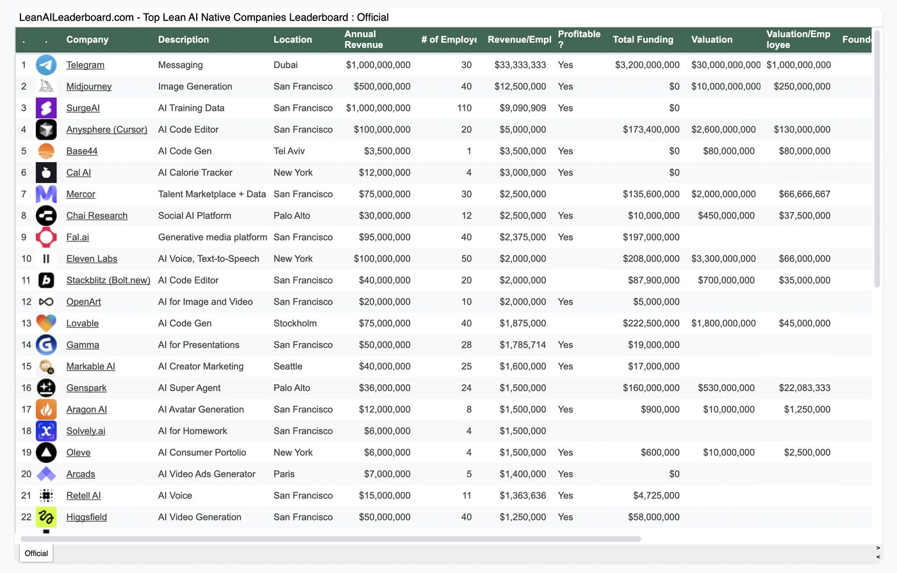
原 PPT P65 · Lean AI Native Companies Leaderboard（2025 年快照）
入选门槛：年化收入 > 500 万美元、员工 < 50 人、成立 < 5 年。
点击一行：按这家的人效，赚到 10 亿美元需要多少人？
参考 原 PPT P64–P65（leanaileaderboard.com，2025 快照；⚠ 2026 实时数据网页为动态加载，未能核对）；R3 Forbes（Gamma）；人均收入 = 年收入 ÷ 员工数；不同口径（年收入 / 年化收入）仅作量级参照
PART 3 · 3.2 用量
谁在大量调用模型？1 万亿 token 俱乐部
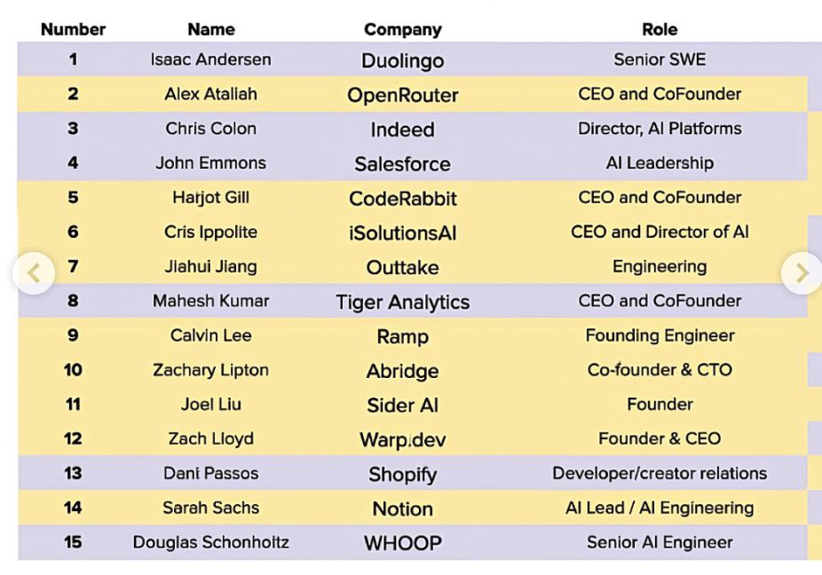
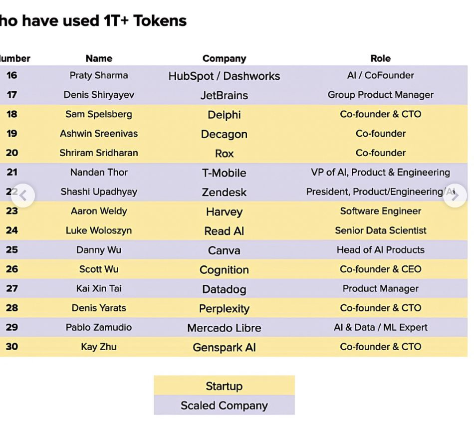
30 家里的 AI 50
Abridge、Notion、Decagon、Harvey、Cognition、Perplexity、Genspark——7 家是 2026 榜单公司；OpenRouter、Rox 在 Brink List。
2026
OpenAI：API 每分钟处理 > 150 亿 token（DevDay 2025 为 60 亿）；约 200 家组织累计超 1 万亿 token（⚠ 二手转述）。
读法：AI 50 里的应用公司，本身就是模型的大客户——应用层的“成本结构”，一半是别人的模型调用费。
参考 原 PPT P59–P60（OpenAI DevDay 2025 的 30 家万亿 token 客户）；R20 OpenAI 企业更新；R21 shuaiguan.io 转述 OpenAI 企业报告 ⚠；对照名单为本课自行比对
PART 3 · 3.2 中国
中国：入口之争
参考 原 PPT P58（非凡产研，国内 AI App，月活）；R19 QuestMobile 2026-09（经 199IT、快科技、虎嗅转载）；⚠ 两榜口径不同（前者含 AI 搜索与美图类 App，后者为“AI 原生 App”），不能直接比较；元宝同比来自 36 氪转引
PART 3 · 3.3 下一批
Brink List：平均成立 24 个月
点击公司
2026 新设：20 家种子/A 轮公司，合计融资 > 35 亿美元；其中 3 家由女性领导。
参考 R5 Forbes《The AI 50 Brink List》（2026-04-16）；OpenRouter 收购见 R18 Fortune ⚠（据知情人士，最终价格可能变化）；“一句话”为中文意译
PART 3 · 3.4 资本
参考 R17 Crunchbase News（2026-10-05，数据截至 10-02）；R16 BlockWest Research ⚠ 二手；R9 The Verge/Bloomberg；R8 Reuters/NBC；估值倍数 = 估值 ÷ 年化收入，不同时点口径不一
PART 3 · 3.4 结局
一年之内，名单里的公司有了三种结局
2025
Windsurf 被拆分
Google 以 24 亿美元聘走联创并授权技术；Cognition 收购余下部分
2025
Scale AI
CEO Alexandr Wang 去 Meta 建超级智能实验室；公司称仍独立运营
2026-02
xAI 并入 SpaceX
合并实体 Forbes 估值 1.25 万亿美元（二手称并购价 2,500 亿 ⚠）
2026-06 → 08
SpaceX 收购 Cursor
600 亿美元；8 月完成（⚠ 二手）
2026-08
Stripe 收购 OpenRouter
据报道 > 70 亿美元（⚠ 知情人士）；它是 Brink List 公司
2026-11-19
Anthropic 上市
Nasdaq ANT；定价 $83；完全稀释约 $1.5T ⚠
被买走
买家是平台与巨头：人才 + 授权，或整家收购。
上市
Anthropic 已公开交易；OpenAI 预计 2027。
继续独立
Midjourney、Gamma 等少融资、早盈利的路线仍然成立。
参考 R3 Forbes（Scale AI、xAI、Windsurf）；R10 Forbes（Cursor）；R16 BlockWest ⚠（xAI 并购价）；R18 Fortune ⚠；R8 Anthropic 官方定价/交割 + Reuters（完全稀释市值 ⚠）
PART 3 · 3.5 八刀
AI 这四年，砍向了哪些行业？
每一刀 = 一次模型或产品能力跃迁 → 一类具体任务被替代 → 一批公司与岗位受冲击
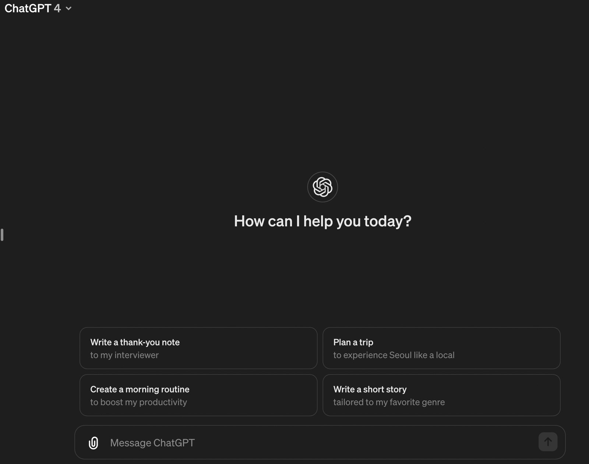
第一刀 · 2022-11
ChatGPT
→ 作业辅导 · 技术问答
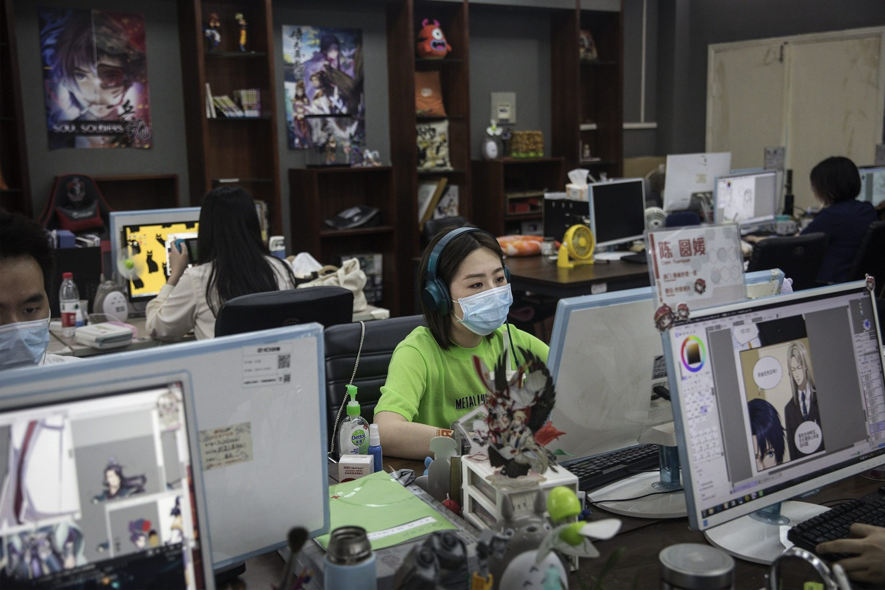
第二刀 · 2023-03
GPT-4 · MJ v5
→ 游戏原画 · 图库
第三刀 · 2023-05
Photoshop AI
→ 抠图换背景岗位
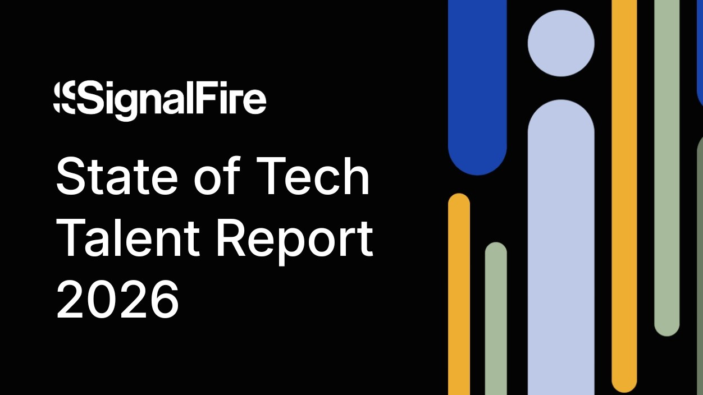
第四刀 · 2025–26
AI 编程
→ 大厂新人招聘
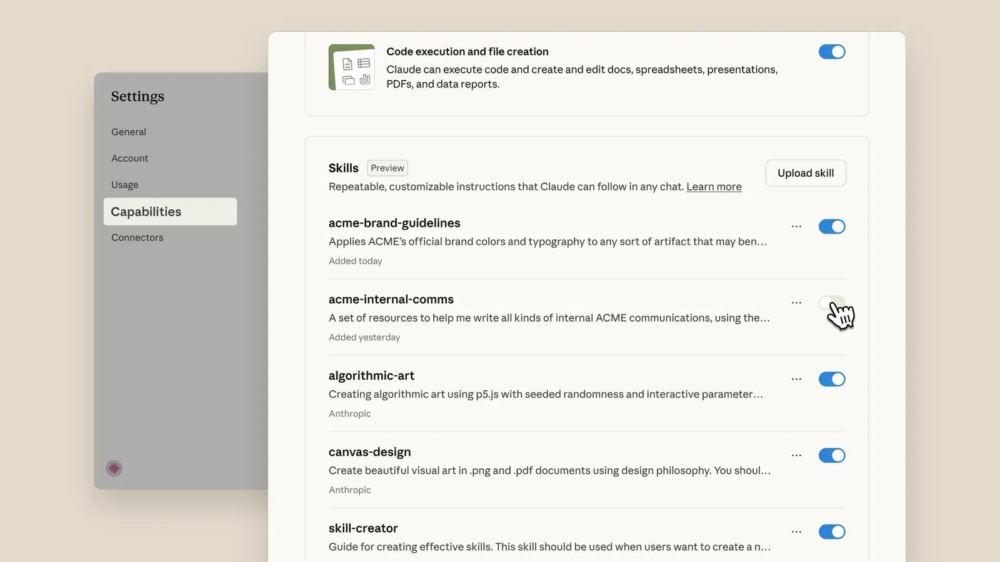
第五刀 · 2025-10 →
Agent Skills
→ 扣子企业版下线
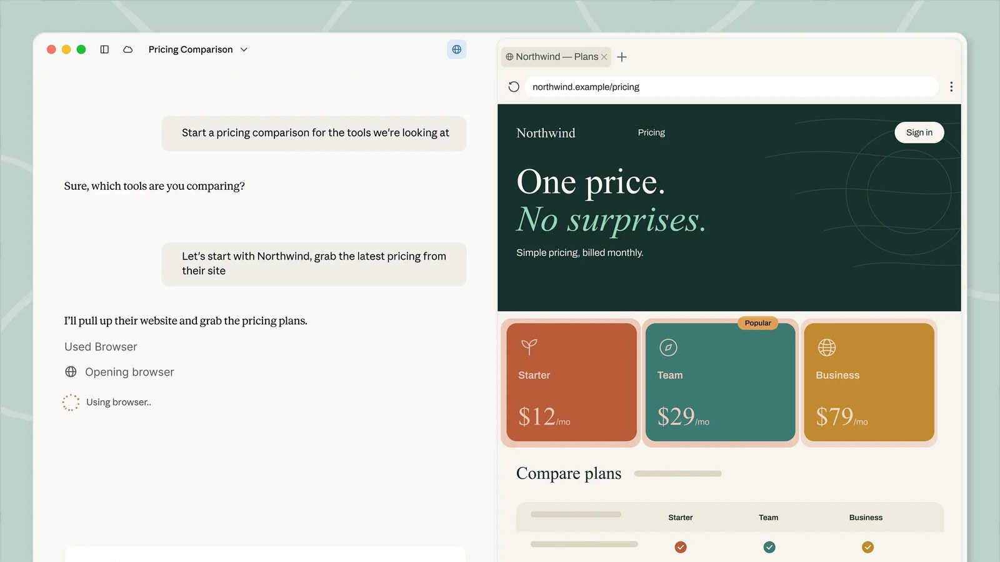
第六刀 · 2026-01
Anthropic 插件
→ 软件股 · 自由职业
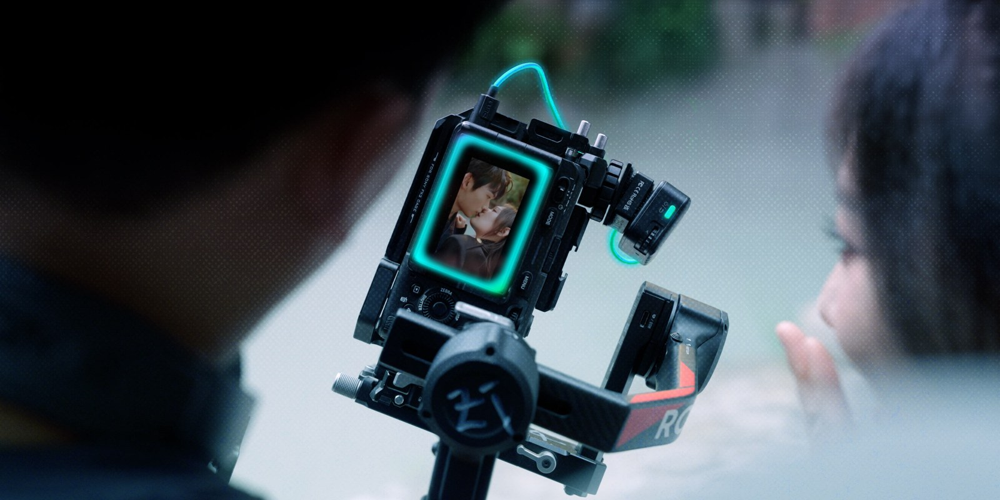
第七刀 · 2026-02
Seedance 2.0
→ 真人短剧
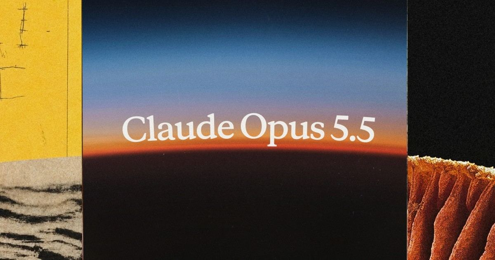
第八刀 · 2026 秋
Opus 5.5
→ 视频制作 · 自媒体
参考 各刀详见后续页；⚠ 因果关系为媒体报道与课堂判断，数字请以原文为准。R24–R48
PART 3 · 3.5 八刀
第 1 刀 · 2022-11
ChatGPT 上线：
作业辅导与程序员问答
触发
OpenAI 发布 ChatGPT：免费、对话式，一个问题直接给出答案。
冲击
- Chegg（作业辅导）2023-05 称 ChatGPT 冲击新增订阅，股价当日暴跌，Pearson 等教育股同日下挫
- Stack Overflow：提问 −56%、回答 −63%（2018 → 2023-07）；2023-10 裁员约 28%
⚠ Stack Overflow 流量自 2020 年峰值后已在下滑，ChatGPT 是加速器而非唯一原因；Chegg 股价为当日报道口径，未核最新价。
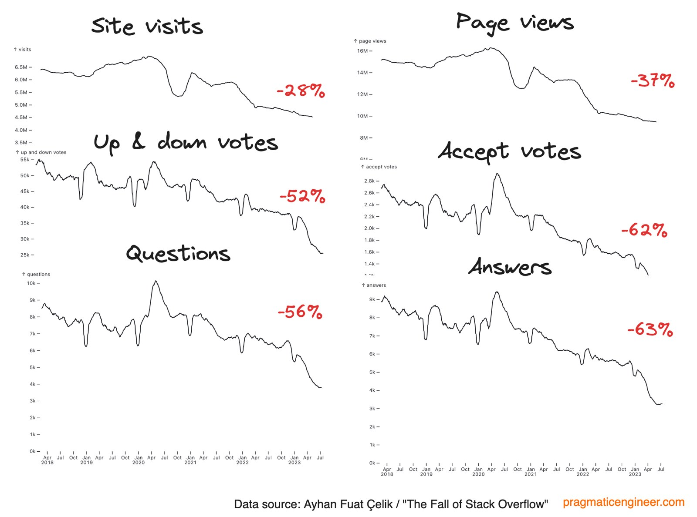
Stack Overflow 六项指标 2018–2023.07（Pragmatic Engineer，数据 A. F. Çelik）ChatGPT 初代界面Stack Overflow CEO 宣布裁员（Business Insider）
参考 R24 Guardian（Chegg）；R25 Business Insider（Stack Overflow 裁员）；R26 Pragmatic Engineer（图表）；ChatGPT 截图取自 L1
PART 3 · 3.5 八刀
第 2 刀 · 2023-03
GPT-4 与 Midjourney v5：
游戏原画外包
触发
GPT-4（03-14）与 Midjourney v5（03-15）接连上线：出图质量首次够用于商业。
冲击
- 第一财经 2023-04：游戏外包公司三个月裁员约 30%，多为初、中级原画师
- 50 人原画公司从“画图”降级为给 AI 修图：甲方一天出 100+ 张 AI 角色，下月还要再裁 20 多人
- Shutterstock：股价较 2021 峰值约 −96%（⚠ 二手图表）；2025-01 宣布与 Getty 合并
⚠ 游戏行业同期还受寒冬、版号等影响，裁员不能全记在 AI 上；Shutterstock 的下跌为二手统计图表，并含并购、行业因素，未独立核对。
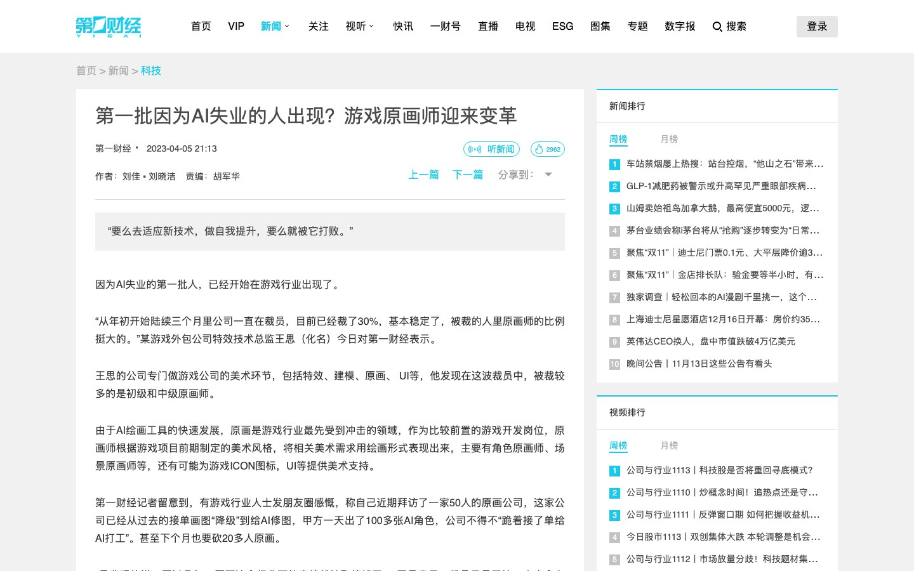
第一财经 2023-04-05：《第一批因为 AI 失业的人出现？》中国游戏原画师（Rest of World）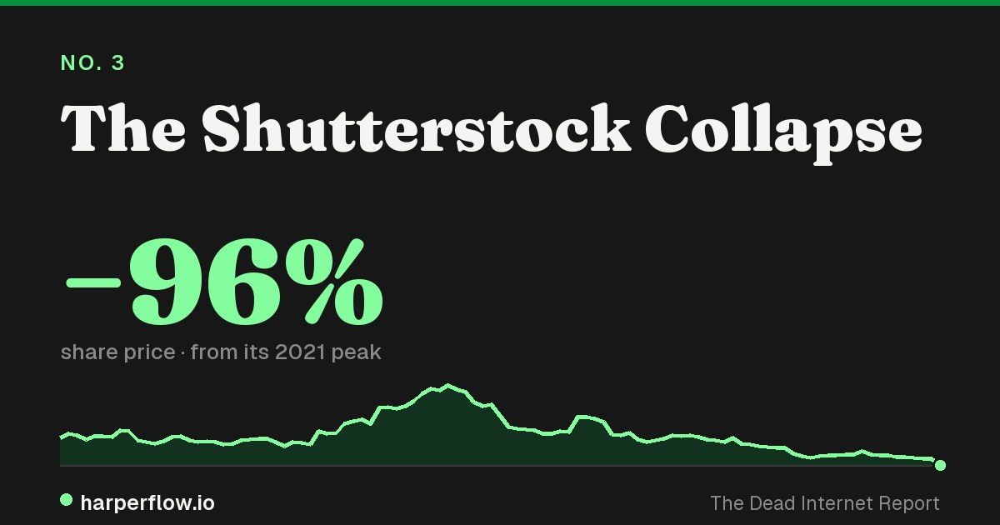
Shutterstock 股价（The Dead Internet Report）⚠
参考 R27 第一财经；R28 Rest of World；R29 harperflow ⚠ 二手；R30 Reuters（Shutterstock–Getty）
PART 3 · 3.5 八刀
第 3 刀 · 2023-05
Photoshop 内置 AI：
只会抠图换背景的岗位
触发
Adobe 把 Firefly 生成式填充放进 Photoshop：选区 + 一句话，几秒完成扩图、换背景、去物体。
冲击
- 过去按小时计费的抠图、换背景、去路人变成一个按钮
- 消失的是任务：只会机械修图的入门岗被压缩，会审美、会指挥 AI 的人更值钱
- Adobe 的说法：Firefly 是设计师的 co-pilot，不是替代
⚠ “岗位消失”目前没有可核实的统计，属于趋势判断与媒体报道；Adobe 为利益相关方。
Photoshop 生成式填充：左原图，右为一句话生成的汽车与水坑（Adobe 官方）课堂提问
当一个岗位 80% 的时间是可被一键完成的任务，剩下 20% 的判断力能撑起这份工资吗？
参考 R31 Adobe Blog（2023-05-23）；R32 Guardian（Adobe 与岗位担忧）
PART 3 · 3.5 八刀
第 4 刀 · 2025–2026
AI 编程工具成熟：
大厂不再招新人
触发
Copilot → Cursor → Claude Code：写得出、改得动、跑得通的编码 Agent 进入日常开发。
冲击
- Stanford “金丝雀”论文：22–25 岁软件开发者就业较 2022-10 下降约 20%，35 岁以上仍在增长
- 最易被 AI 取代的职业中，早期员工相对下降 13%
- SignalFire：大厂新毕业生入职占比持续下降（⚠ 具体数字以 2026 版报告为准）
⚠ 论文自己提醒：趋势可能混有利率、宏观因素；其用的是 ADP 薪资数据，只覆盖美国。
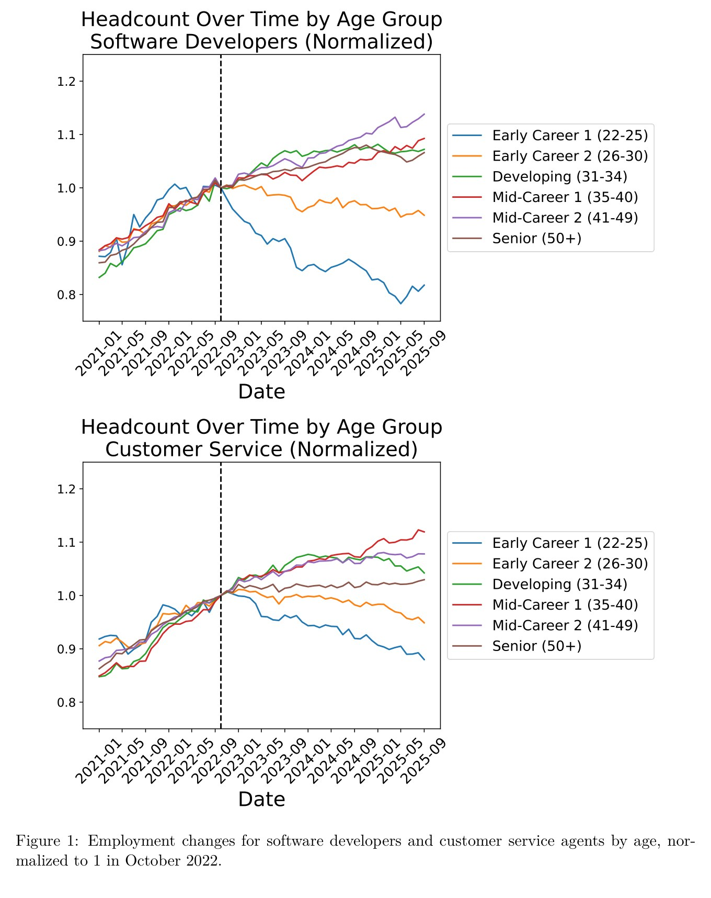
Brynjolfsson 等（2025）图 1：软件开发者分年龄段就业，2022-10 = 1SignalFire 人才报告 2026−20%
22–25 岁软件开发者
就业 vs 2022-10
参考 R33 Brynjolfsson, Chandar, Chen，Stanford Digital Economy Lab，2025-11；R34 SignalFire State of Talent 2026
PART 3 · 3.5 八刀
第 5 刀 · 2025-10 → 2026-11
Agent Skills 推出：
扣子企业版下线
触发
Anthropic 发布 Agent Skills（2025-10），12 月开放为标准：把业务流程写成一份可复用的 SKILL，任何通用 Agent 都能加载。
冲击
- 扣子（Coze）企业版：2026-11-30 起暂停新售；旧版套餐 2026-12-31 下线；新版企业版 2027-12-31 下线
- 字节官方理由是产品整合：扣子、TRAE 团队并入豆包体系（IT之家）
- 课程判断：拖拽式工作流平台的价值被“通用 Agent + Skill”挤压
⚠ 官方原因是“整合升级”；与 Agent Skills 的因果关系是课程判断，不是公司表态。
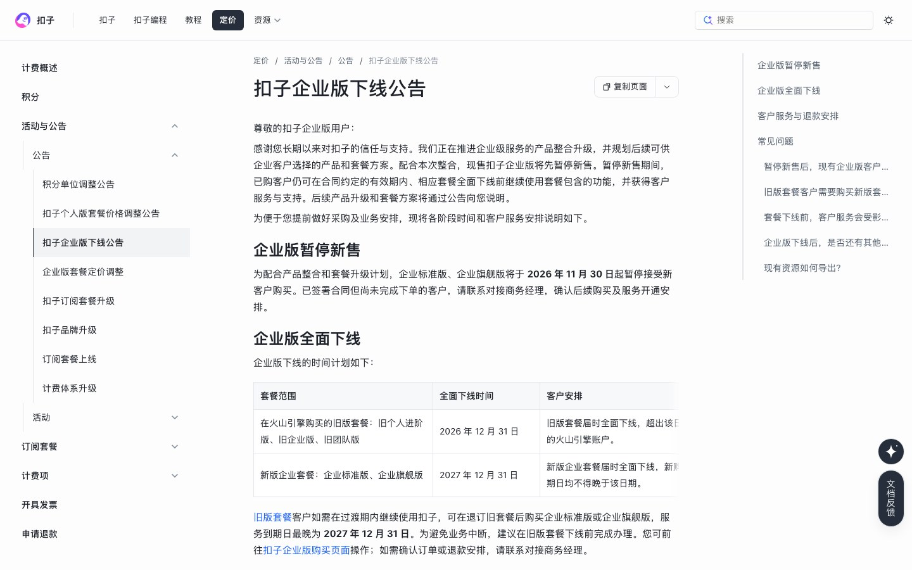
扣子官方《企业版下线公告》Claude 的 Skills 设置页（Anthropic）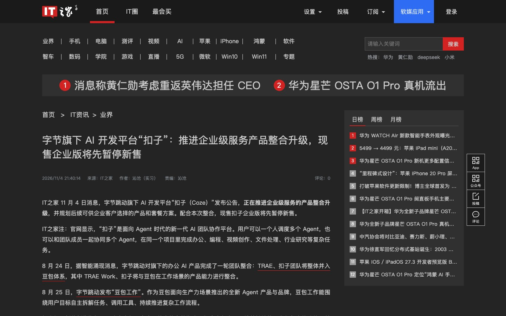
IT之家 2026-11-04 报道
参考 R35 Anthropic（Agent Skills）；R36 VentureBeat（开放标准）；R37 扣子官方公告；R38 IT之家
PART 3 · 3.5 八刀
第 6 刀 · 2026-01 → 02
Anthropic 插件上线：
软件股与自由职业平台
触发
Claude Cowork 插件（法律、销售、财务等岗位包）发布：模型公司直接做应用层。
冲击
- 2026-02-04：全球软件股应声下挫，媒体称 SaaSpocalypse（Reuters、Bloomberg）
- Fiverr：2026 年内股价跌超 35%（Calcalist，02-19）
- Upwork：02-10 当日大跌（Motley Fool）
⚠ 下跌是多因叠加（财报、指引、利率），不能全记在插件上；Upwork 为当日报道，本页未截图核对。Reuters 页无法截图。
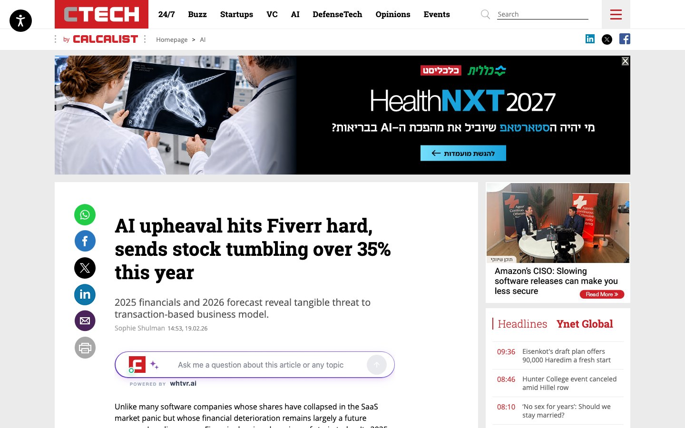
Calcalist 2026-02-19：《AI 冲击重创 Fiverr，今年股价跌超 35%》Claude Cowork（Anthropic）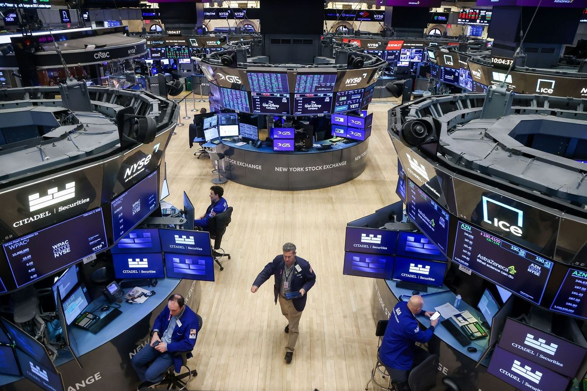
纽交所交易大厅（软件股抛售，报道配图）
参考 R39 Reuters / Bloomberg（2026-02-04）；R40 Calcalist；R41 Motley Fool ⚠
PART 3 · 3.5 八刀
第 7 刀 · 2026-02
Seedance 2.0 上线：
真人短剧
触发
字节发布 Seedance 2.0：文字 / 图片 / 音频 / 视频联合生成，镜头与口型可直接成片。
冲击
- 财新 2026-06 封面报道：AI 90 天内接管中国微短剧产业链
- 真人短剧公司砍掉非头部演员项目，只留“确定能赚钱”的真人剧
- BBC 中文、Sixth Tone：AI 短剧的成本、版权与演员处境
⚠ “砍项目”来自报道转述，未核实单家公司数据；发布日期 02-12（财新、NewsChina）与 BBC 的“3 月”口径不一。
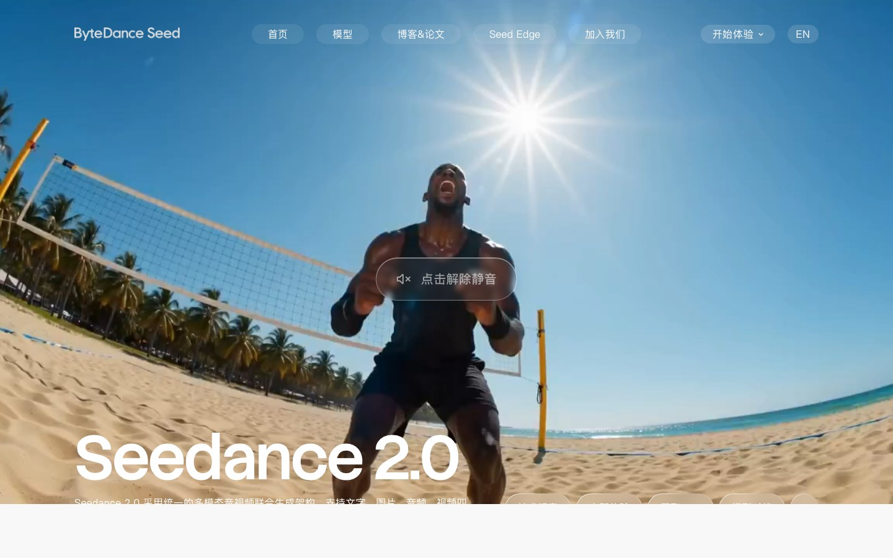
ByteDance Seed：Seedance 2.0 官方页BBC 中文：AI 短剧画面Sixth Tone：微短剧片场
参考 R42 Sixth Tone；R43 财新；R44 BBC 中文；R45 ByteDance Seed 官方页
PART 3 · 3.5 八刀
第 8 刀 · 2026 秋
Claude Opus 5.5 发布：
视频制作与自媒体
触发
Opus 5.5 能自主调用剪辑工具：粗剪、字幕、配乐、导出，一个 Agent 全包。
冲击
- 21 经济网 2026-10：剪辑变便宜了，钱流向了算力
- 视频制作公司压缩剪辑岗；自媒体创作者的内容门槛与竞争同时上升
- 价值从“会操作软件”转向选题、审美、流量判断
⚠ 本刀证据最弱：目前只有从业者访谈、效率案例，没有可核实的裁员数字；ifai.io 为二手评述。
21 经济网 2026-10-13：《AI 剪辑混战，钱从剪辑师流向了谁？》Claude Opus 5.5（Anthropic 官方）
参考 R46 Anthropic（Opus 5.5）；R47 21 经济网；R48 ifai.io ⚠ 二手
PART 3 · 3.5 八刀
八刀之后，看到的是同一个规律
① 先砍任务，不是职业
抠图、写作业答案、剪辑、搬运问答——可标准化、可验证的环节最先被替代。
② 受冲击的是“中间层”
辅导、外包、图库、低代码平台、入门岗、中介平台：夹在需求与能力之间的角色。
③ 价值向两端集中
一端是算力与模型，另一端是判断、审美、客户关系。
⚠ 规律为课堂归纳；各刀证据强弱不同（第四刀有论文，第八刀仅有报道）。
证据最强的一刀：22–25 岁软件开发者就业（Stanford，2025）
中间层平台：Fiverr 股价（Calcalist，2026-02）
五问回扣看一家 AI 公司时，先问：它是被砍的中间层，还是在砍别人的那一刀？
参考 R33 Stanford；R40 Calcalist；规律为课堂归纳
PART 3 · 3.4 框架
看一家 AI 公司，问这五个问题
点击卡片，看 AI 50 中的例子
课堂用
用这五问分析一家 AI 50 公司：层级、岗位、护城河、被覆盖风险、单位经济。
参考 本课框架（课堂归纳）；例子来自 R1、R3 Forbes、R3 Forbes；Cursor 人效见 P29；⚠ 五问为教学框架，不是投资建议
LECTURE 8 · 人工智能产业实践
04
PART 4
Cognition & Wrap-up
新一轮的人工智能产业，到底在改变什么？
4.1个人、组织、系统
4.2认知飞轮与知识边界
4.3五级阶梯：下一程
4.4课程回顾与启示
PART 4 · 4.1 个人
对于个人——与 AI 交互的时代到来
个人的能力的极大提升
参考 原 PPT P63
PART 4 · 4.1 组织
对于组织——真正用 AI 提升生产效率的时代到来
组织能力的边界变得模糊
参考 原 PPT P66
PART 4 · 4.1 系统
对于系统——AI 最喜欢的世界
用自然语言去处理人和系统的关系
参考 原 PPT P67
PART 4 · 4.2 认知飞轮
新一代的人工智能产业革命，到底在改变什么？
答案是认知改变——人与 AI 在四个象限之间形成飞轮
参考 原 PPT P62（认知改变）；动态示意为课堂重绘
PART 4 · 4.2 知识边界
AI 的边界在“凸包”之内——但这个凸包远比想象的大
S⁰
人类已有的知识
S⁰ 已有知识
S¹、S²、S³ 组合
非线性：跳出凸包
S⁰ 的凸包
前提
AI 的能力局限在人类已有知识的凸包之内——这是对的。
高维
S¹ = S⁰ + S⁰
组合已有知识（Minkowski 和）；高维下 S¹ 就远大于 S⁰，且非凸。
迭代
S² = S¹ + S¹ → S³ …
可在多层 attention 内完成，或靠下一代模型。
非线性
高维 + 迭代 + 非线性，可能超出原有凸包，边界扩张极大。
现实约束
噪声、误差、数据缺失、reward 延迟——这只是刻画一种机制。
说明 二维示意：点为知识“向量”，S¹–S³ 为 Minkowski 和（大集合取随机子样），非线性为示意变换；最后一幕为三维示意（真实知识空间维度远高于 3）。观点为课堂论述，非实证结论 ⚠
PART 4 · 4.3 五级阶梯：下一程
参考 L7.2 同款阶梯；Bloomberg, OpenAI Sets Levels… (2024-07-11)；2027–2030 判断为本课展望 ⚠。← → 逐级升起
REVIEW · 4.4 课程回顾
八讲走完：Data → AI → Business Value
基本工具
R / Python、回归、机器学习、大模型与 Agent
参考 课程规划（Lecture 1 的路线页）
PART 4 · 4.2 启示
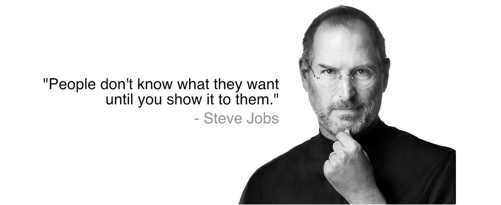
用户并不知道自己想要 AI——
直到一个具体产品出现在他们面前。
这也是 50 家公司的共同点：它们卖的不是“模型”，而是一个看得见的岗位与流程
参考 原 PPT P67（Steve Jobs 引语）
LECTURE 8 · 智能产业实践
THANK YOU
谢谢 大家
问题与讨论
常象宇
西安交通大学 管理学院
xiangyuchang@xjtu.edu.cn

参考 原 PPT P69
LECTURE 8 · 参考文献
参考文献 References
R1 Forbes, Forbes 2026 AI 50 List, 2026-04-16. forbes.com/lists/ai50
R2 Forbes, Forbes Unveils 2026 AI 50, Marking Shift From AI Dominance To AI Independence, 2026-04-16
R3 E. Brier, Forbes 2026 AI 50 List（Forbes Middle East 转载），2026-04-17
R4 E. Brier, How Forbes Compiled The 2026 AI 50 List, 2026-04-16
R5 S. Chierchio, R. Shrivastava, The AI 50 Brink List, Forbes, 2026-04-16
R6 foundevo, Forbes AI 50 List 2026, 2026-04-29 ⚠ 二手
R7 S. Sawada, I researched all 50 companies on the Forbes AI 50, note.com, 2026-08-01 ⚠ 二手
R8 Anthropic 官方定价/交割（2026-11-18/20）；Nasdaq ANT（11-19）；Reuters 完全稀释市值 ≈ $1.5T ⚠；路演报道 CNBC/Yahoo 2026-11-10
R9 The Verge / Bloomberg, OpenAI valued at $1.25 trillion, 2026-11；Reuters, 2026-10-19
R10 Forbes, SpaceX Will Buy AI Coding Firm Cursor For $60 Billion, 2026-06-16
R11 TechCrunch（Cursor），2026-03-02、2026-04-17
R12 Reuters, Databricks valued at $190 billion, 2026-08-13
R13 Bloomberg, Cognition raises $2 billion at a $48 billion value, 2026-09-08
R14 Harvey, Harvey raises $550M at $15.5B, 2026-09-09
R15 TapToMarket, AI funding week Sep 8–14, 2026
R16 BlockWest Research, AI lab funding tracker, October 2026 ⚠ 二手
R17 Crunchbase News, Q3 2026 global startup funding, 2026-10-05
R18 Fortune, Stripe clinches over $7 billion deal to buy OpenRouter, 2026-08-16 ⚠
R19 QuestMobile（经 199IT、快科技、虎嗅转载），2026-10-20
R20 OpenAI, The next phase of enterprise AI, 2026
R21 shuaiguan.io, OpenAI Statistics ⚠ 二手
R22 leanaileaderboard.com（H. Shi），原 PPT 截图（2025 快照）
R23 Forbes, AI 50 2025（Forbes Middle East 转载）
原 PPT Materials/Lecture_8.pptx（P1–P69）
⚠ 标注页面含二手信息、口径不一的数据或课堂归纳（如四层归类，并非 Forbes 官方分类），引用前请核对原文。调研截至 2026-11-14。
说明 页面底部的 R# 对应此处编号
LECTURE 8 · 参考文献（续）
参考文献（续）八刀
R24 M. Milmo, AI race is disrupting education firms – and that is just the start, Guardian, 2023-05-03
R25 Business Insider, Stack Overflow layoffs, 2023-10；Stack Overflow Blog, 公司公告，2023-10-16
R26 G. Orosz, Are reports of Stack Overflow’s fall exaggerated?, Pragmatic Engineer（图表数据：A. F. Çelik）
R27 第一财经，《第一批因为 AI 失业的人出现？游戏原画师迎来变革》，2023-04-05
R28 Rest of World, AI is killing China’s video game illustrators, 2023
R29 harperflow.io, The Dead Internet Report: The Shutterstock Collapse ⚠ 二手统计
R30 Reuters, Shutterstock to merge with Getty Images, 2025-01-07
R31 Adobe Blog, Photoshop: new features, AI contextual presets, 2023-05-23
R32 J. Taylor, Adobe to integrate AI into Photoshop amid fears of job losses, Guardian, 2023-05-23
R33 E. Brynjolfsson, B. Chandar, R. Chen, Canaries in the Coal Mine, Stanford Digital Economy Lab, 2025-11
R34 SignalFire, State of Tech Talent Report 2026, 2026-06-22 ⚠ 数字未逐项核对
R35 Anthropic, Equipping agents for the real world with Agent Skills, 2025-10
R36 VentureBeat, Anthropic launches enterprise Agent Skills and opens the standard, 2025-12
R37 扣子，《扣子企业版下线公告》，docs.coze.cn（2026-11）
R38 IT之家，《字节旗下 AI 开发平台“扣子”：推进企业级服务产品整合升级》，2026-11-04
R39 Reuters, Global software stocks hit by Anthropic wake-up call, 2026-02-04；Bloomberg, What’s behind the SaaSpocalypse, 2026-02-04（未截图）
R40 S. Shulman, AI upheaval hits Fiverr hard, Calcalist, 2026-02-19
R41 Motley Fool, Why Upwork stock plunged today, 2026-02-10 ⚠ 未截图核对
R42 Sixth Tone, 微短剧报道（sixthtone.com/news/1018902）
R43 财新，How AI took over China’s micro-drama industry in 90 days, 2026-06-01
R44 BBC 中文，AI 短剧报道，2026
R45 ByteDance Seed，Seedance 2.0 官方页，seed.bytedance.com
R46 Anthropic，Claude Opus 5.5，anthropic.com
R47 21 经济网，《AI 剪辑混战，钱从剪辑师流向了谁？》，2026-10-13
R48 ifai.io, Opus 5.5 AI agent video editing ⚠ 二手
⚠ 因果关系为媒体报道与课堂判断；未截图的来源（Reuters、Bloomberg、Motley Fool）为检索所见，引用前请核对原文。调研截至 2026-11-17。
说明 与上一页 R1–R23 连续编号